Burt.K
Awesome Discovery
디지털 비디오 기술 이해하기

[001]
- 동영상 인코딩이 무엇이고 왜하고 어떻게 하는지 살펴 보겠습니다.

[002]
- 강의 Github repo는 https://github.com/leandromoreira/digital_video_introduction 입니다.
- 제안해 주실 의견이 있다면 주십시오. 언제든지 환영합니다.
- 컴퓨터를 잘 알고 특히 오디오와 비디오에 대해 잘 아는 분에게는 처음 부분이 지루할 수 있습니다. 그러나 어느 부분에 이르면 반드시 도움이 될 내용을 찾을 수 있을 것입니다.
[003]
- 시작해 봅시다.

[004]
- 우리는 이미지를 단순한 2차원 정수 배열로 볼 수 있습니다. 회색인 경우 1개의 평면만 필요하고 컬러인 경우 더 많은 평면을 사용해 3차원 배열을 만듭니다.

[005]
- 픽셀은 래스터 이미지의 물리적인 점입니다. 그리고 모든 점을 주소로 접근 가능한 디스플레이 장치에서 주소로 접근 가능한 가장 작은 요소입니다. 따라서 스크린 상에 표현된 그림에서 제어가 가능한 가장 작은 점이 바로 픽셀입니다.

[006]
- 컬러 깊이는 한 픽셀의 색상을 구성하는데 사용되는 비트 수입니다.

[007]
- 컬러 깊이에 따른 이미지 품질의 차이입니다.

[008]
- 컬러 깊이의 여러 종류입니다.

[009]
- 일부 사람들은 RGB 컬러 형성이 색칠과 비슷할거라 생각하지만 위 그림처럼 모든 색상을 섞으면 흰색이 되지 않습니다(RGB 컬러 모델에서는 RGB를 모두 섞으면 흰색이 됨). 그림을 보면 갈색입니다. 왜 그럴까요?
- 그 이유는 RGB와 다른 컬러 모델이기 때문입니다. 색칠은 빼기 컬러 모델입니다. 참고로 RGB는 더하기 컬러 모델입니다.

[010]
- 우리가 보는 색상(대역폭)의 주파수(속도)를 생각해 보면 좀더 근사치를 얻을 수 있습니다.
- 이것이 더하기 컬러 모델입니다.

[011]
- 빛을 생각해 보십시오. 빨간색, 녹색, 파란색을 켜고 중심점을 가리키면 흰색 빛이 보입니다.
- 그리고 빛의 일부를 차단하면 다른 색상이 만들어 지는 것을 볼 수 있습니다.
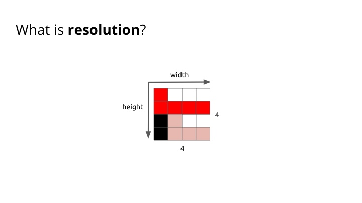
[012]
- 데모 : image_as_3d_array.ipynb 과 [how_filters_work.ipynb]()
- 해상도는 표시할 수 있는 장치에서 각 차원당 표시할 수 있는 픽셀수입니다. 일반적으로 폭x높이로 말하며 단위는 픽셀을 사용합니다.

[013]
- DAR은 폭과 높이 사이의 비례 관계를 설명합니다.

[014]
- PAR은 디지털 이미지에서 픽셀의 폭과 높이를 비교하는 방법을 설명하는 수학적 비율입니다.

[015]
- SAR은 스토리지 비율입니다.

[016]
- 비디오는 움직이는 비주얼 이미지를 인코딩 된 디지털 데이터 형식으로 표현한 것입니다. 서로 다른 차원과 시간이 4차원 신호를 만듭니다.
- 30, 29.97 24, 23.99(Hz) 등 서로 다른 프레임 속도는 아래 글을 참고합니다.
- http://theautomaticfilmmaker.com/blog/2009/2/23/about-frame-rates-or-why-2997.html

[017]
- 인터레이스와 프로그레시브는 여분의 대역폭을 소모하지 않고 비디오 디스플레이의 인식된 프레임 속도를 두 배로 높이는 기술입니다.
- 디인터레이스는 일반적인 아날로그 TV 신호 및 1080i 포맷인 HDTV 신호와 같은 인터레이스 비디오를 비인터레이스 비디오로 변환하는 과정입니다.
- 프로그레시브는 각 프레임의 모든 라인이 순서대로 그려지도록 동영상을 표시, 저장 그리고 전송하는 방법입니다.

[018]
- 숫자는 해상도의 높이를 나타냅니다.
- p 문자는 프로그레시브를 나타냅니다.
- i 문자는 인터레이스를 나타냅니다.

[019]
- 비트레이트는 단위 시간당 전달되거나 처리되는 비트 수입니다. 비디오인 경우 단위 시간은 초(sec)입니다.
- 11.520 kbps 는 초당 11.520k 비트가 처리됨을 의미합니다.
[020]
- CBR은 코덱의 출력 데이터가 소비되어야 하는 속도가 일정하다는 것을 의미합니다.(실제로 거의 일정합니다.)

[021]
- VBR을 사용하면 복잡한 미디어 파일 세그먼트에 더 높은 비트레이트를 할당하고 덜 복잡한 세그먼트에는 낮은 비트레이트를 할당합니다. 즉, 복잡한 세그먼트가 더 많은 저장공간을 사용하고 덜 복잡한 세그먼트는 적은 저장공간을 사용합니다.
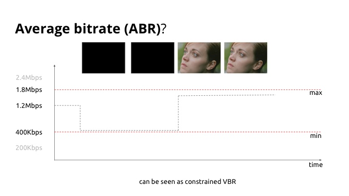
[022]
- ABR은 VBR과 동일하지만 최소값과 최대값이라는 제한이 있습니다.

[023]
- 720p 30fps의 1시간 길이의 비디오를 저장할 때 278GB 저장 공간이 필요합니다!!!

[024]
- 데모 영상 시청
- 지금까지 배운 내용 되돌아보기

[025]
- From the world to the bits

[026]
- 디지털카메라로 사진을 찍으려 버튼을 누면 전면에 있는 조리개가 열리고 렌즈를 통해 빛이 들어옵니다.
- 들어오는 광선을 캡처해 전기신호로 변환하는 (사진)센서가 있습니다.
- 기본적으로 이미지를 획득하는 두 개의 장치(센서)가 있습니다. 그 중 하나는 CCD입니다.

[027]
- 다른 하나는 CMOS 센서입니다.
- 전력소비가 더 적다.
- CCD보다 데이터 전송 속도가 빠르다.
- 가격이 싸다.
- 휴대폰, 웹캠에 대부분 사용된다.
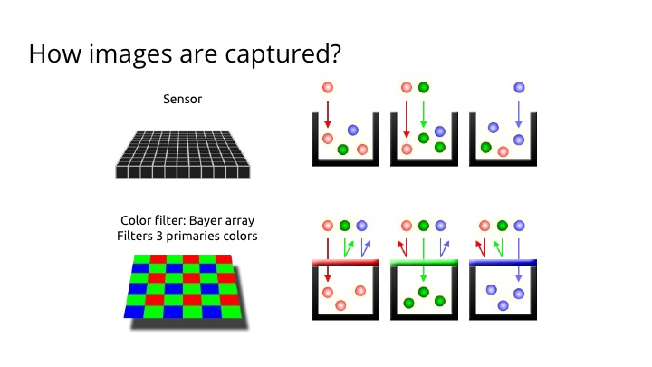
[028]
- 디지털카메라는 이미지를 기록하기 위해 수백만개의 작은 라이트캐비티(light cavity) 또는 포토사이트(photosite)를 사용합니다.
- 카메라의 셔터 버튼을 누르고 노출이 시작되면 이들 각각이 노출되어 광자를 수집하고 저장합니다.
- 그러나 위의 그림은 흑백이미지만 생성합니다.
- 컬러이미지를 캡쳐하려면 각 캐비티 위에 필터를 놓아 빛의 특정 색상만 허용해야 합니다.

[029]
- Bayer demozaikin
- 카메라가 실제로 보는 것입니다.

[030]
- “Demozaikin”
- 바이어 디모자이싱은 주요 색상의 바이어 배열을 최종 이미지로 변환하는 과정입니다. 최종 이미지는 각 픽셀에 대해 모든 색상 정보를 담고 있습니다.

[031]
- 바이어 디모자이싱 전, 후

[032]
- Redundancy Removal

[033]
- 비디오당 2.3Tb로 작업하는 것은 말도 안되므로 해결책을 찾아야 합니다.
- 공간과 시간의 상관 관계를 생각해 봅시다.

[034]
- Exploiting our vision

[035]
- 컬러 모델을 표현하는 여러가지 방법이 있습니다.
- 두 번째 모델은 원색을 석어서 얻을 수 있습니다.(cyan, magenta, yellow)
- 컬러 모델 - 특히 R G B에 초점을 둔 데모를 보여줍니다.

[036]
- 에너지 강도입니다.

[037]
- 막대 세포는 주로 밝기를 담당하는 반면 원뿔 세포는 색을 담당합니다. 원뿔 세포는 S-원뿔(파란색), M-원뿔(녹색) 그리고 L-원뿔(빨간색) 3가지 유형의 원뿔이 있습니다.
- 원뿔 세포(색상)보다 막대 세포(밝기)가 훨씬 많으므로 색상보다 어두운 색과 밝은 색을 더 잘 구분할 수 있다고 추측할 수 있습니다.
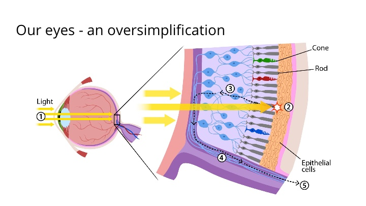
[038]
- 눈에는 약 1억 2천만 개의 막대 세포와 6백만 개의 원뿔 세포가 들어 있습니다.

[039]
- 우리는 색상보다 밝기에 더 민감합니다.

[040]
- 컬러 공간은 색상의 특정 구성입니다.
- Y는 밝기 성분이고 CB 및 CR은 청색차이 및 적색차이 채도(chroma) 성분입니다.
- YCbCr 이미지는 RGB 이미지와 정확히 동일한 정보를 담고 있지만 RGB 이미지와 다르게 색상을 구성합니다.

[041]

[042]
- 녹색은 어디에 있습니까?
- HDTV를 위한 SDTV 정의 표준은 다른 것들입니다.

[043]

[044]
- 주제에서 벗어난 것이지만 알고 있어야 합니다.

[045]
- 종종 사람들이 니모닉 BT REC를 얘기할 것입니다.

[046]
- 크로마 서브샘플링은 밝기보다 색상 차이에 대해 사람의 시각이 덜 민감한 점을 이용하여 밝기 정보 보다 채도 정보에 대한 해상도를 낮춰서 이미지를 인코딩하는 방법입니다.
- 휘도(Luminance) - 감지 된 에너지 양

[047]
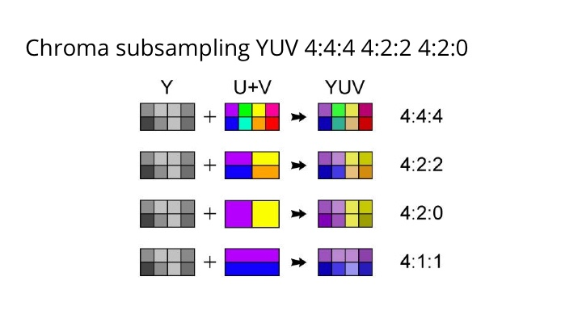
[048]

[049]
- 병합 과정을 자세히 살펴보면 ycbcr을 사용하면 8 + 2 + 2 공간만 사용합니다.

[050]
- YUV420은 가장 많이 사용되는 크로마 서브샘플링 중 하나로 다른 플레인(plane)을 많이 줄여줍니다.
- 디지털카메라를 확인해 보면 최고 품질이라고는 하지만 4:4:4가 아닌 4:2:0을 사용하고 있을 것 입니다.

[051]
- 위 이미지는 크로마 서브샘플링에 따른 이미지이며 아래 이미지는 동일 이미지의 크로마 해상도입니다. 4: 4:4 와 다른 것들을 보면서 쉽게 확인할 수 있습니다.
- 데모 보기
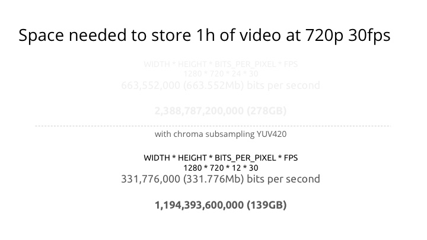
[052]
- 인간 시각의 특징을 이용해 동일한 비디오를 저장하는데 필요한 공간을 절반으로 줄일 수 있었습니다.
- 4:4:4로 되돌릴 방법은 없습니다. 4:4:4에서 4:2:0으로 변환할 수는 있지만 되돌아가는 방법은 없습니다.

[053]
- Correlations in time

[054]
- 해결 방법 중 하나는 프레임을 여러 종류로 나누는 것입니다.
- I프레임은 ‘정적인 이미지 파일’과 같이 완전한 사진으로 ‘인트라 코딩 된 사진’입니다.
- P프레임과 B프레임은 이미지 정보의 일부만 가지고 있는 프레임입니다.
- 따라서 I프레임보다 차지하는 공간이 적어 비디오 압축률이 향상됩니다.
- P프레임(‘Predicted picture’)은 이전 프레임에서 이미지 변경만 저장합니다.
- 예를들어, 자동차가 고정 된 배경을 가로 질러 움직이는 장면에서는 자동차의 움직임만 인코딩합니다.
- 인코더는 변하지 않는 배경 픽셀을 P프레임에 저장하지 않아 공간을 절약 할 수 있습니다.
- P프레임은 델타 프레임이라고도 합니다.
- B프레임(‘Bi-predictive picture’)은 현재 프레임과 앞뒤 프레임의 차이를 사용하여 내용을 지정함으로써 더 많은 공간을 절약합니다.

[055]
- 사람들은 프레임간 중복이 있음을 인식하고 프레임을 종류별로 나누었습니다.
- 그 중 P프레임은 이전 프레임에서 변경된 점만 저장하는 프레임입니다.
- I프레임은 압축 할 수는 없지만 I프레임을 디코딩 할 필요가 없습니다.
- P프레임은 이전 프레임의 데이터를 사용하여 압축을 풉니다. I프레임보다 더 압축할 수 있습니다.
- B프레임은 데이터 참조를 위해 이전 프레임과 다음 프레임을 모두 사용하여 가장 많은 양의 데이터를 압축할 수 있습니다.

[056]
- 많은 공간을 줄일 수 있습니다.

[057]
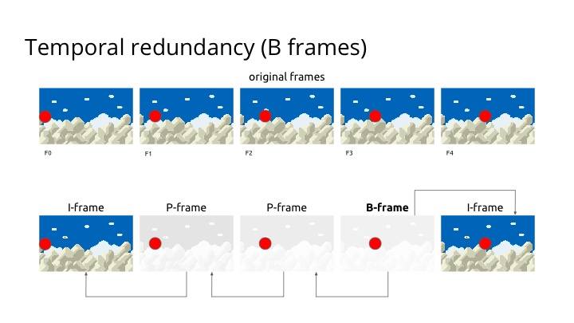
[058]
- B프레임은 현재 프레임과 이전 및 다음 프레임 간의 차이를 사용하여 내용을 지정함으로써 더 많은 공간을 절약합니다.
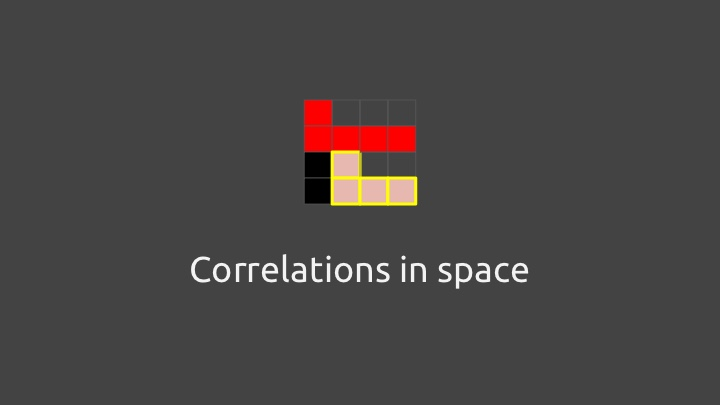
[059]
- Correlations in space

[060]
- 상관 관계가 높은 많은 영역들.

[061]

[062]
- 공간 중복성을 사용합니다.
- 이미지는 비슷한 색상 패턴을 따르는 경향이 있습니다.

[063]

[064]
- CODEC - enCOder / DECoder

[065]
- 표준 H264 VS 코덱 x264(ffmeg을 사용하거나 직접 코딩해야 합니다)
- 표준은 구문(비트스트림)과 디코드 프로세스(많은 특허가 내부에 있음)를 정의합니다.

[066]
- 컨테이너(래퍼, 유틸리티): 메타데이터, 프레이밍, 인터리빙, 타이밍, 데이터 저장 및 표시.

[067]
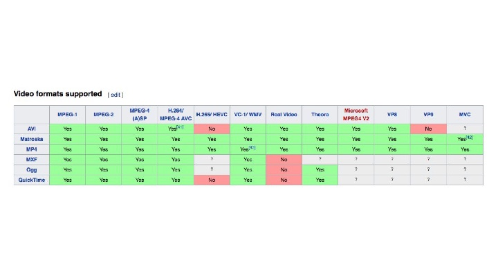
[068]
- 각 코덱은 특정 문제(예: 비디오 전송 56kbps, 전화, 화상 회의)를 해결하기 위해 만들어졌으며 인터넷 대역폭은 더 커지고 해상도는 더 커졌으며 CPU 성능 또한 커졌습니다.

[069]

[070]

[071]

[072]
- H.265 라이센스는 극도로 비쌌습니다.
- Microsoft는 H.265에 대해 수억 달러를 지불해야했습니다.
- HEVC Advance가 라이센스 정책을 변경했지만 너무 늦은 것 같네요.

[073]
- 얼라이언스의 초기 목표는 차세대 비디오 형식을 제공하는 것입니다.
- 코덱은 언제 출시되나요?
- 이 그룹은 2016년 말에서 2017년 3월 사이 비트스트림을 동결시키는 것을 목표로하고 있습니다.
- 그 후 곧바로 브라우저 기반 지원을 예상하고 그 후 12개월 이내에 첫 번째 하드웨어 지원을 예상하고 있습니다.

[074]
- 거의 모든 코덱은 비슷한 방식으로 작동하고 가장 최근에 모션 보상에 기반한 코덱은 훨씬 더 관련이 있습니다.
- 따라서 이 블록은 코덱이 작동하는 방식의 일부를 설명합니다.
- 이 설명에서 실제 코덱 예제를 보여 드리겠습니다.

[075]

[076]
- 프레임을 블록으로 분할하고 블록을 하위 블록으로 분할합니다.
- 블록을 분할하는 방법에 대한 권장 사항은 없습니다.
- 가변 블록 크기는 가변 예측을 허용하지만 슬라이스 및 타일과 같은 상위 파티션은 인코딩/디코딩을 병렬화하는 방법을 제공합니다.

[077]
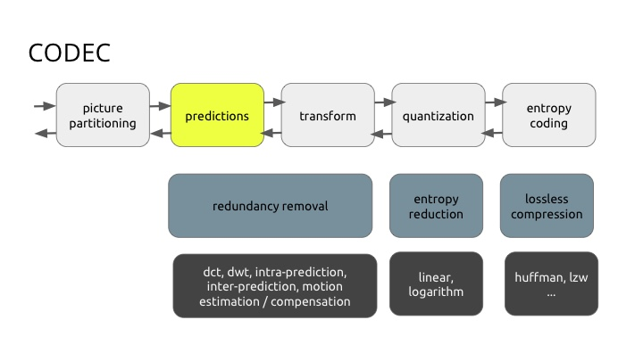
[078]

[079]

[080]

[081]

[082]
- 변환은 압축하기 쉽게 픽셀을 변경할 때 사용합니다.
- DCT(이 예에서)는 픽셀 블록을 동일한 크기의 주파수 계수 블록으로 변환합니다.
- 공간적 중복성을 제거하기 위한 2D변환(보통 DCT). 에너지 압축 특성을 가지고 있습니다.

[083]
- 첫 번째 계수(DC 계수)는 입력 배열의 모든 샘플을 나타냅니다.
- 63(AC)계수는 블록 전체의 색상 변화를 나타냅니다.
- 각 주파수에서 샘플 세트의 주파수 내용은 전체 세트의 가중 평균을 취하여 계산됩니다.
- 이러한 가중치 계수는 코사인 파와 유사하며, 빈도는 결과 배열 인덱스에 비례합니다.
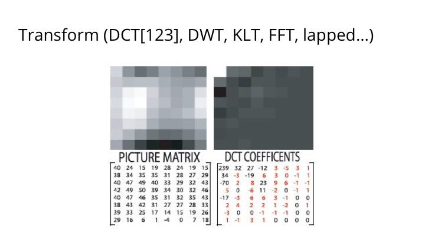
[084]
- 데모: https://github.com/leandromoreira/digital_video_introduction/blob/master/dct_experiences.ipynb
- 대부분의 신호 정보는 DCT의 몇 가지 저주파 성분에 집중되는 경향이 있습니다.
- H264는 DCT의 매우 단순한 8x8 4x4 변환 +/- 근사법을 사용하지만 더 빠릅니다.
- FT 복소수 vs DCT 실수 [계산적으로 더 빠름] 공간 영역에서의 회선은 주파수 영역에서의 곱입니다.
- DCT에서 신호는 반대로 코사인의 합으로 분해됩니다.
- DCT에서 신호는 신호가 사인과 코사인의 합으로 분해되는 DFT(Discrete Fourier Transform)와는 반대로 코사인의 합으로 분해됩니다.
- DCT로 압축하려면 낮은 주파수를 유지하고 “높은 주파수”를 버립니다. 블록의 왼쪽 위 모서리에서 일정 거리 이내에 있는 DCT계수를 유지하고 나머지 값을 0으로 설정합니다.
- https://people.xiph.org/~xiphmont/demo/daala/demo1.shtml
- 수식들로 인해 보기에 어려워 보이지만 구현은 생각보다 쉽습니다.
- 변환 - DCT 데모 보기
- https://gist.github.com/leandromoreira/9bb7b519173ba5158b5b4b213c46d8fa

[085]
- 더 높은 주파수를 떨어뜨려 압축 할 수도 있습니다.

[086]

[087]

[088]

[089]

[090]

[091]
- 데모: uniform_quantization_experience.ipynb
- 양자화값 실험해 보기
- https://www.hdm-stuttgart.de/~maucher/Python/MMCodecs/html/jpegUpToQuant.html
- 이 부분에서 정밀도 및 데이터를 잃는 곳입니다.
- 비트레이트을 구성 할 때 미세하게 조정된 부분이 있습니다.
- 여기 예제는 단순한 균일 양자화입니다.
- 일반적으로 더 잘 수행 할 수 있는 행렬이나 함수가 있습니다(컨텍스트와 함께)
- JPEG은 정의 된 테이블을 사용하고 알려진 행렬에 곱하는 QF(양자화 인수)를 제공합니다

[092]

[093]
- 마지막으로, 1D로 변환된 양자화된 DCT를 무손실 압축으로 압축합니다.
- 엔트로피 - 상관 관계가 있는 VLC 또는 산술로 인해 데이터가 대부분 압축됩니다.

[094]
- 모든 작업이 끝나면 최종 압축 이미지를 알려진 형식(일반적으로 비트스트림이라고 함)으로 “인코딩”할 수 있습니다.
- 하이브리드 모션 보정.

[095]

[096]
- “Transform Coding of Image Difference Signals” US patent 3679821, filed April 1970 and issued July 1972
- “Motion vector estimation in television images” US 4864393
- “Block transform and quantization for image and video coding” US 6882685
- “Method and apparatus for binarization and arithmetic coding of a data value” US 6900748
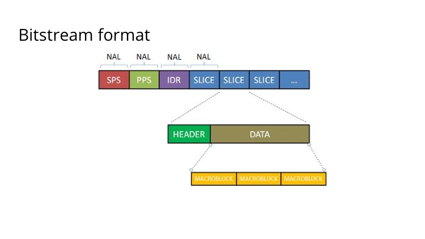
[097]
- 네트워크 추상 레이어(Network Abstract Layer) : H264의 경우 처음 1바이트, H265의 경우 2바이트, 나머지는 페이로드입니다.
- NAL은 VCL(비디오 코딩 레이어)과 비-VCL로 분류 할 수 있습니다.
- NAL은 모든 곳(인터넷, 위성 등)을 저장하고 전송하는 역할을 하기 위해 만들어졌습니다.
- NAL은 패킷 지향 또는 비트스트림 지향 일 수 있습니다.

[098]
- 여기서 우리는 YCbCR, 모션 벡터(예측에서), 모드(인트라, 인터…)와 같이 우리가 얘기 한 것들을 볼 수 있습니다. 이 비트스트림 형식 예제는 h264 예제입니다.

[099]
- 인코딩 부분을 검토하여 표준위가 정한 부분과 인코더 제조업체의 작업이 어디에 있는지 확인 해보세요. (다른 인코더를 비교하고 어떻게 수행하는지 보려면 이 작업을 수행해야합니다.)
- 노란색/녹색 블록은 동일한 최종 비트스트림을 생성하더라도 인코더가 다른 것보다 좋을 수 있는 곳입니다.

[100]
- 디코더는 인코딩 프로세스의 반대가 되어야 합니다.
- https://gist.github.com/leandromoreira/b89918be6f13e7c5452fa1b6b5a8eede
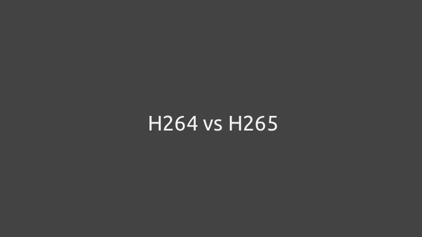
[101]
- 비슷하지만 다릅니다.

[102]

[103]

[104]
- H265는보다 강력한 CPU를 활용하며 더 큰 파티션과 적응력이 뛰어난 파티션(더 나은 해상도 또는 더 높은 해상도로 작동)을 합니다.
- 35개의 인트라 예측 방향으로 계산되며 프로그레시브, CABAC만 지원합니다.
- 엔트로피 코딩 또한 발전하여 각 영역에서 최종 코덱보다 50% 더 좋은 규칙을 적용합니다.
- H265는 프레임을 분할하는 또 다른 방법으로 타일을 도입하여 병렬 계산을 가능하게 합니다.

[105]

[106]

[107]

[108]
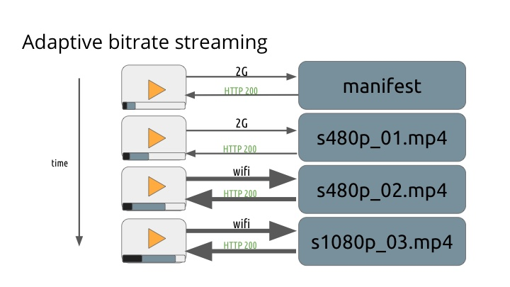
[109]

[110]

[111]

[112] * CORS: Cross-origin resource sharing
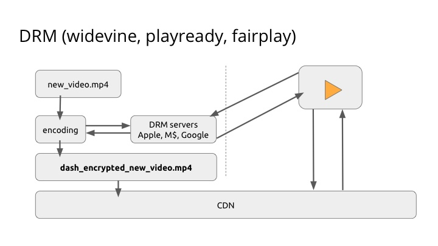
[113]

[114]

[115]
- VBR을 사용하면 동일한 비트레이트을 가진 비디오 세그먼트가 크기 측면에서 상당히 다르기 때문에 플레이어에서 ABR알고리즘을 혼란스럽게 할 수 있습니다.
- 라이브는 연결 변동에 매우 민감하기 때문에 일반적으로 CBR을 사용하려고 합니다.
- CBR vs VBR - ffmpeg 명령을 확인해 보세요.

[116]
- 주어진 프로필을 선택하면 다른 항목을 개선할 수 없습니다.

[117]

[118]
- API는 100% 올바른 코덱을 반환해야 하지만 이 모든 것을 캐싱하는데는 많은 비용이 듭니다.

[119]
- 1 또는 4s I프레임으로 코딩 할 때 라이브는 왜 큰 차이를 보이지 않을까요?
- CBR을 사용하기 때문입니다.
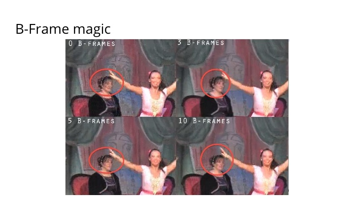
[120]
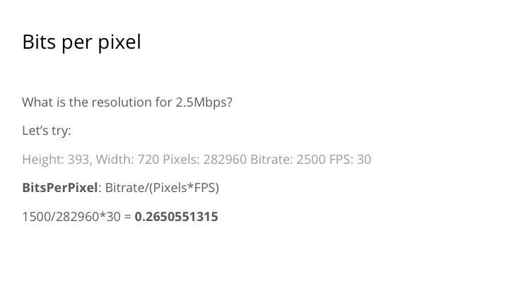
[121]
- 픽셀당 비트수 - 얼마나 큰지를 알려줍니다.
- BPP 경쟁자를 보는 좋은 측정 방법입니다.

[122]
- CABAC은 라이브 액션에서 10-15% 향상된 압축률을 제공합니다.
- 기본 프로필에는 CABAC이 허용되지 않습니다.

[123]
- Apple은 오디오 비트 전송률을 변경했습니다.

[124]

[125]

[126]
- 연속 신호를 이산 신호로 변환합니다.
- Hz는 1초에 얻을 수 있는 샘플의 양입니다.
- https://github.com/leandromoreira/encoding101#audio-sampling

[127]
- 빈도의 해상도
- 가장 높은 점수는 무엇입니까?
- 8 : 0x00-0xFF (255)
- https://github.com/leandromoreira/encoding101#audio-bit-depth

[128]
- 장치 두 개를 사용해서 귀를 흉내내어 소리를 캡쳐할 수 있습니다.
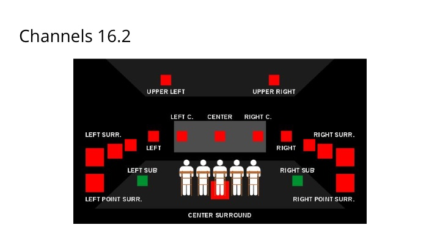
[129]

[130]

[131]

[132]